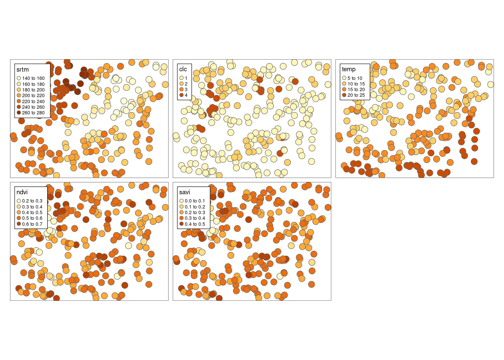
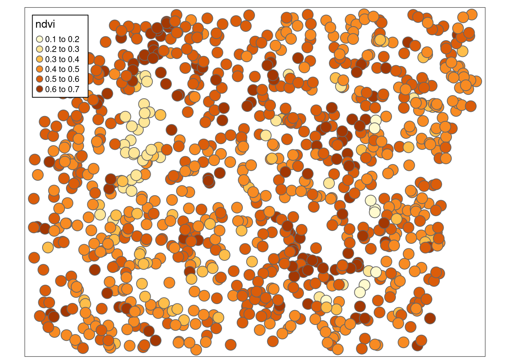
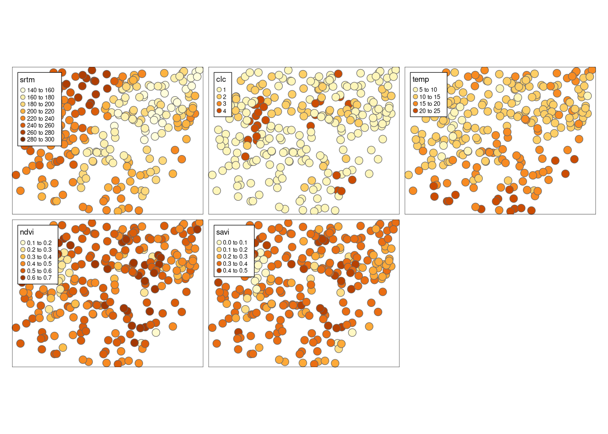
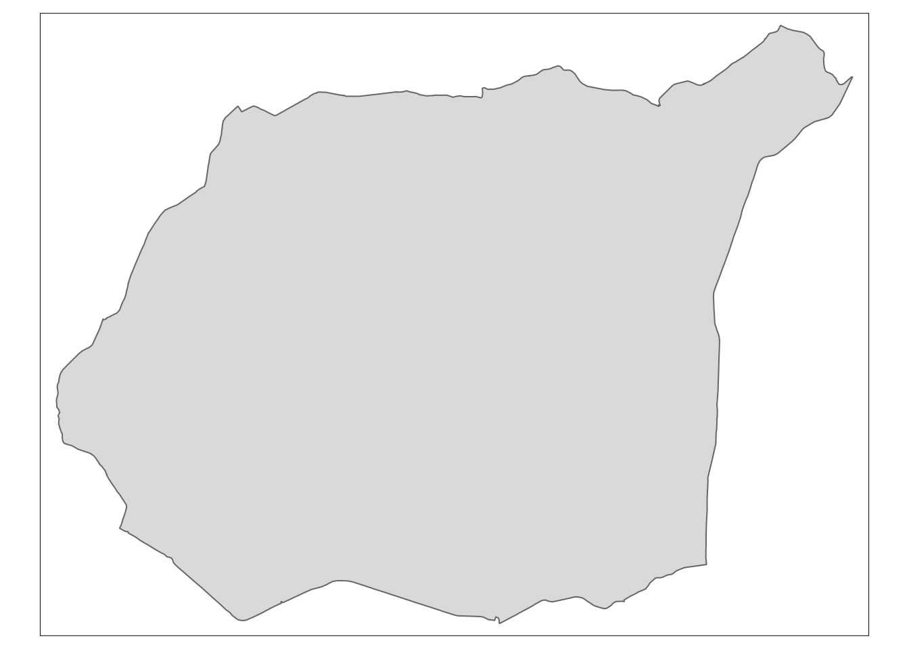
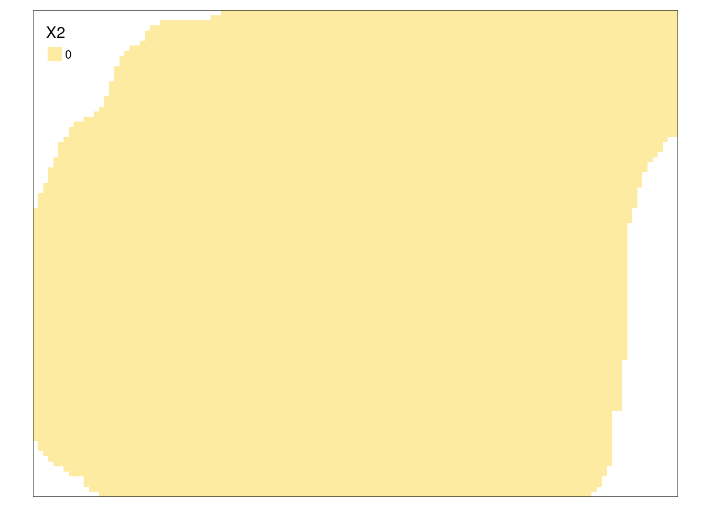
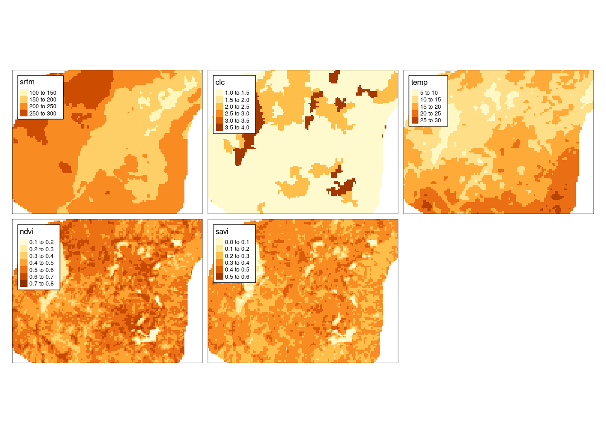

B Dane
Dane wykorzystywane w tym skrypcie można pobrać w postaci spakowanego archiwum (dla rozdziału 2) oraz korzystając z pakietu geostatbook (dla kolejnych rozdziałów). Dodatkowo, przy instalacji pakietu geostatbook pobierane są wszystkie inne pakiety potrzebne do pełnego korzystania z materiałów zawartych w tym skrypcie.
- Archiwum zawierające dane do rozdziału drugiego
- Dane do kolejnych rozdziałów są zawarte w pakiecie geostatbook:
# install.packages("remotes")
remotes::install_github("nowosad/geostatbook@3")
B.1 punkty
data("punkty")
?punktyZbiór danych punkty zawiera 242 obserwacje oraz 5 zmiennych dla obszaru Suwalskiego Parku Krajobrazowego i okolic.
Zmienne:
-
srtm- wysokość w metrach n.p.m. pozyskana z numerycznego modelu terenu z misji SRTM -
clc- uproszczona kategoria pokrycia terenu z bazy Corine Land Cover. 1 oznacza tereny rolne, 2 oznacza lasy i ekosystemy seminaturalne, 3 to obszary podmokłe, 4 to obszary wodne -
temp- temperatura powierzchni ziemi w stopniach Celsjusza -
ndvi- znormalizowany różnicowy wskaźnik wegetacji (ang. Normalized Difference Vegetation Index) -
savi- wskaźnik wegetacji mniej podatny na wpływ jasności gleby na uzyskane wyniki (ang. Soil Adjusted Vegetation Index)
tm_shape(punkty) +
tm_symbols(col = c("srtm", "clc", "temp", "ndvi", "savi")) +
tm_layout(legend.frame = TRUE)
B.2 punkty_ndvi
data("punkty_ndvi")
?punkty_ndviZbiór danych punkty_ndvi zawiera 993 obserwacji oraz 1 zmienną dla obszaru Suwalskiego Parku Krajobrazowego i okolic.
Zmienna:
-
ndvi- znormalizowany różnicowy wskaźnik wegetacji (ang. Normalized Difference Vegetation Index)
tm_shape(punkty_ndvi) +
tm_symbols(col = "ndvi") +
tm_layout(legend.frame = TRUE)
B.3 punkty_pref
data("punkty_pref")
?punkty_prefZbiór danych punkty_pref zawiera 264 obserwacji oraz 5 zmiennych dla obszaru Suwalskiego Parku Krajobrazowego i okolic.
Są one rozlokowane w sposób preferencyjny.
Zmienna:
-
srtm- wysokość w metrach n.p.m. pozyskana z numerycznego modelu terenu z misji SRTM -
clc- uproszczona kategoria pokrycia terenu z bazy Corine Land Cover. 1 oznacza tereny rolne, 2 oznacza lasy i ekosystemy seminaturalne, 3 to obszary podmokłe, 4 to obszary wodne -
temp- temperatura powierzchni ziemi w stopniach Celsjusza -
ndvi- znormalizowany różnicowy wskaźnik wegetacji (ang. Normalized Difference Vegetation Index) -
savi- wskaźnik wegetacji mniej podatny na wpływ jasności gleby na uzyskane wyniki (ang. Soil Adjusted Vegetation Index)
tm_shape(punkty_pref) +
tm_symbols(col = c("srtm", "clc", "temp", "ndvi", "savi")) +
tm_layout(legend.frame = TRUE)
B.4 granica
data("granica")
?granicaGranica Suwalskiego Parku Krajobrazowego.
tm_shape(granica) +
tm_polygons()
B.5 siatka
data("siatka")
?siatkaSiatka badanego obszaru dla obszaru Suwalskiego Parku Krajobrazowego i okolic. Zawiera ona 96 wierszy i 127 kolumn.

B.6 dane_uzup
data("dane_uzup")
?dane_uzupSiatka badanego obszaru dla obszaru Suwalskiego Parku Krajobrazowego i okolic zawierająca zmienne dodatkowe. Zawiera ona 96 wierszy i 127 kolumn oraz 4 zmienne:
-
srtm- wysokość w metrach n.p.m. pozyskana z numerycznego modelu terenu z misji SRTM -
clc- uproszczona kategoria pokrycia terenu z bazy Corine Land Cover. 1 oznacza tereny rolne, 2 oznacza lasy i ekosystemy seminaturalne, 3 to obszary podmokłe, 4 to obszary wodne -
ndvi- znormalizowany różnicowy wskaźnik wegetacji (ang. Normalized Difference Vegetation Index) -
savi- wskaźnik wegetacji mniej podatny na wpływ jasności gleby na uzyskane wyniki (ang. Soil Adjusted Vegetation Index)
